IntelliJ XQuery Support plugin
Provides support for XQuery language in version 3.0 in IntelliJ IDEA
Cloudbees Jenkins status:
Links
- GitHub Issues - request bug fixes, new features, enhancements, track current release
- Changelog - track recent changes
- Collaboration - help in plugin development
Features
- Syntax and error highlighting 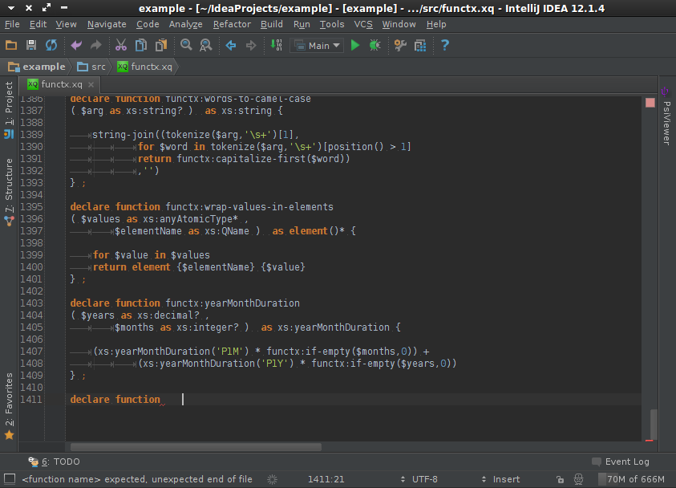
- Keyword completion 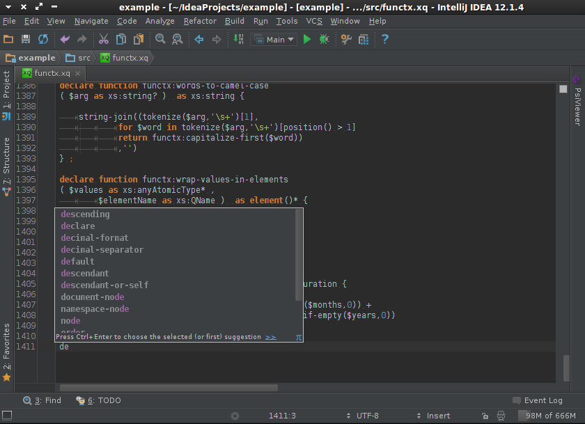
- Code navigation: function, variable and namespace quick jump and find usage 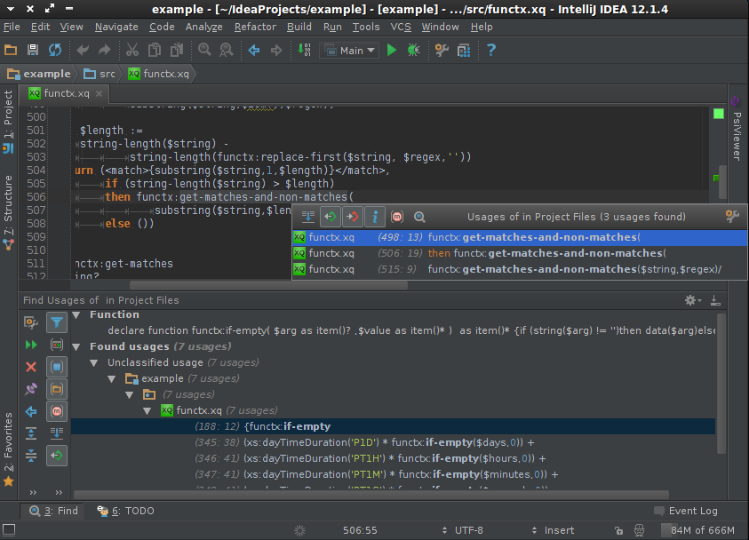
- Function and variable completion (also from imported modules) 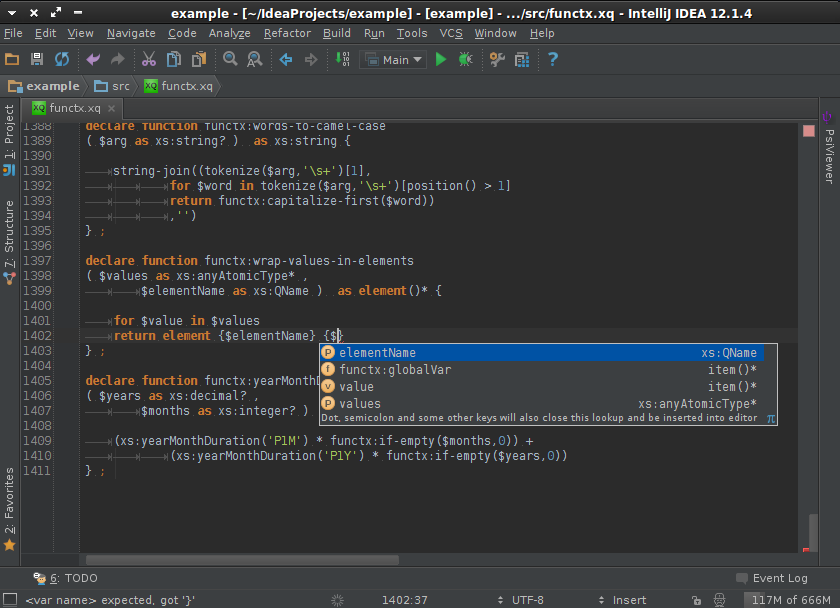
- File structure view 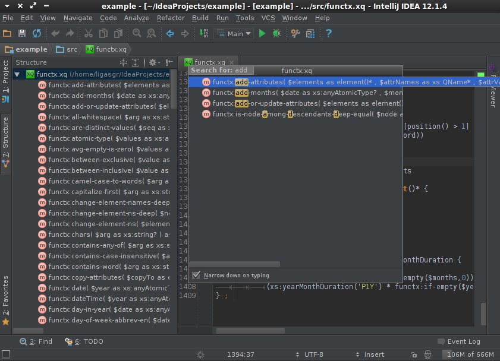
- Code formatter 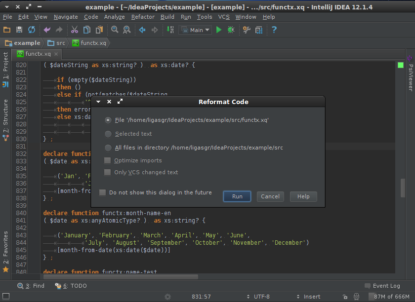 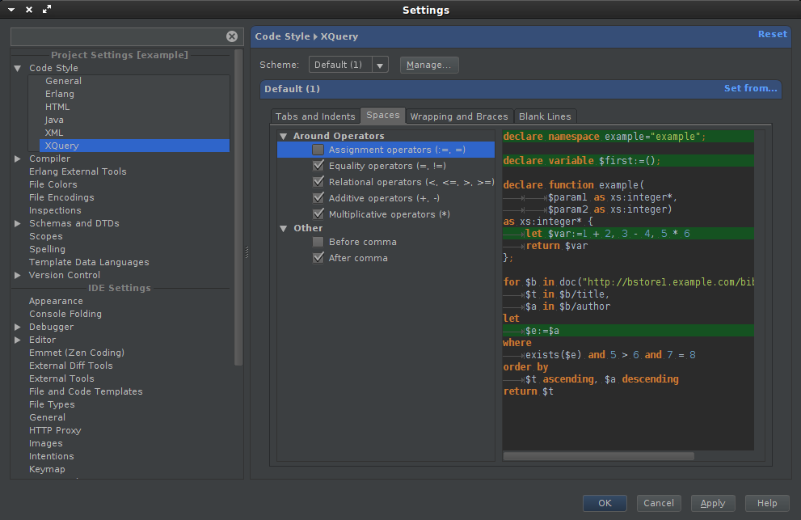
- Definition of multiple data sources for running your xquery code 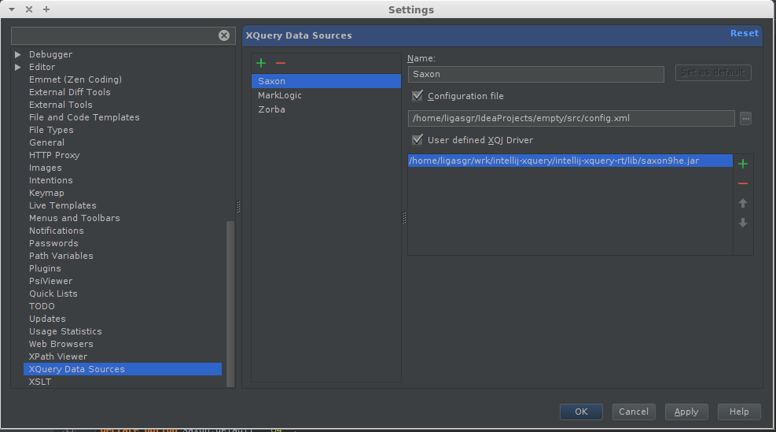 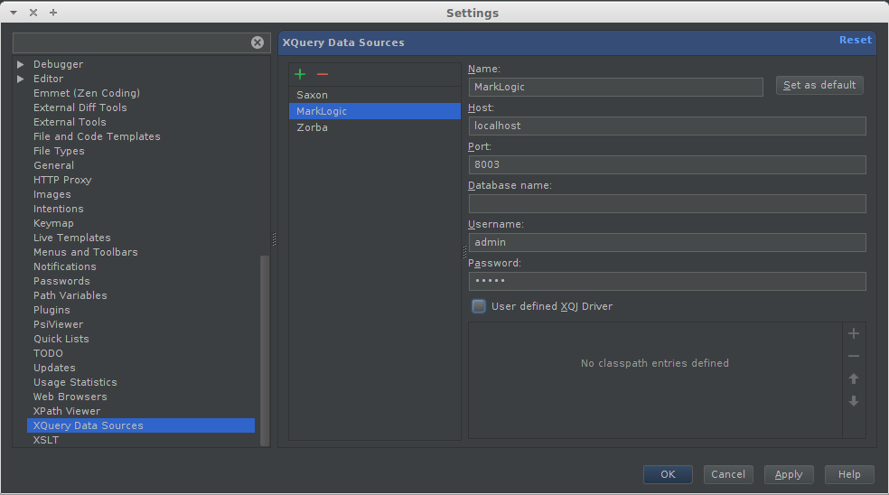 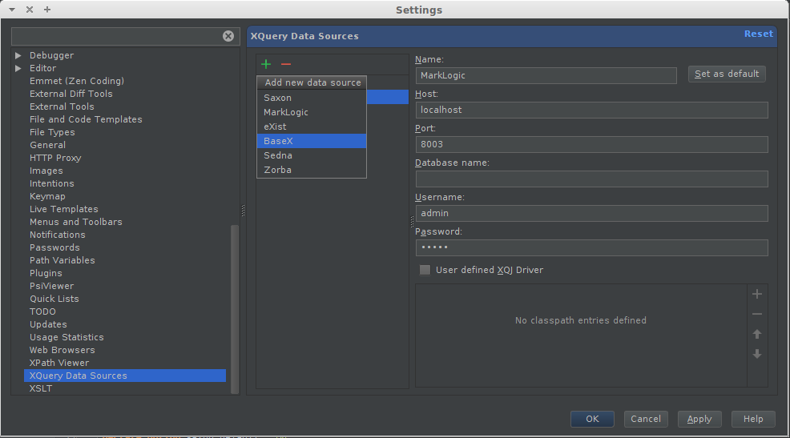
- Running of main modules 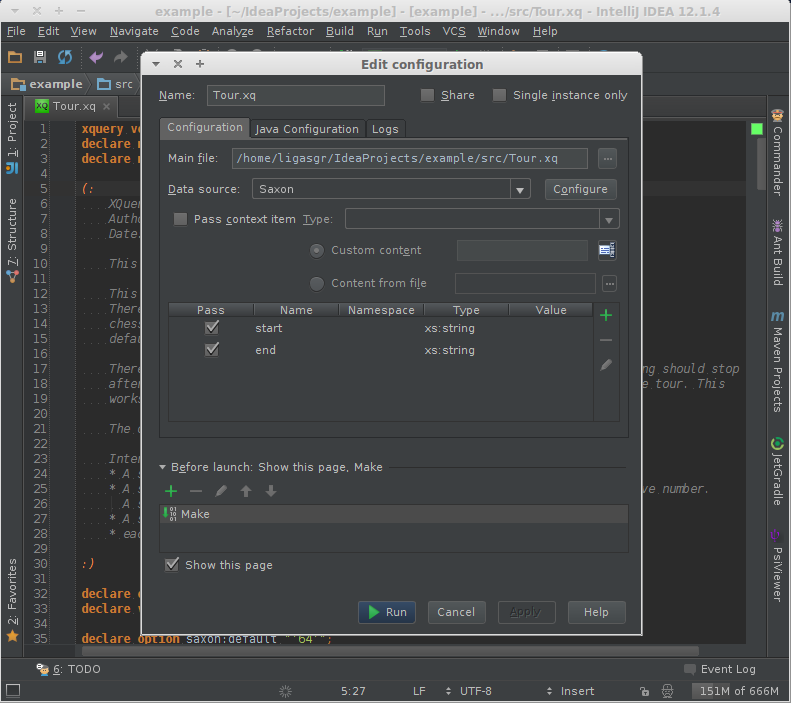 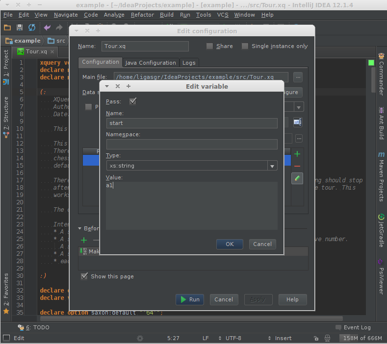 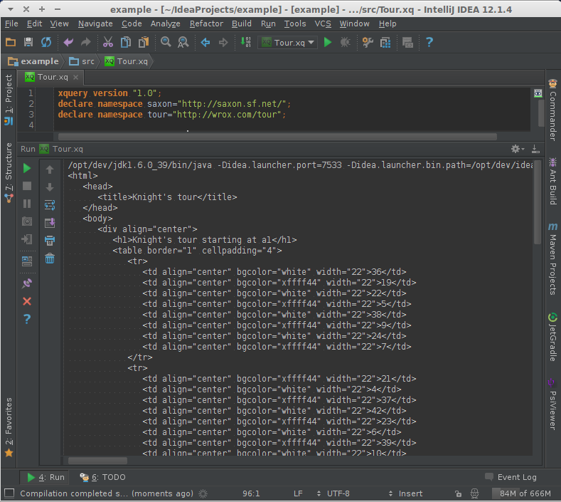
Installation
- Download the latest version of any of IntelliJ platform based IDEs (although IntelliJ Idea may have some features which others won't) and install it
- Setup the latest version of XQuery Support plugin from Configure > Plugins > Browse Repositories... > XQuery Support
- Restart IntelliJ IDEA.
- You're ready to go!